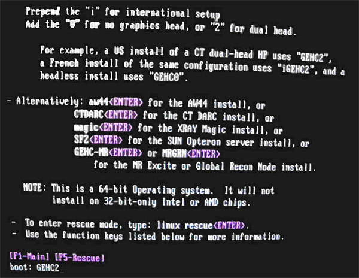

Type: boot: GEHC2
| NOTE: | Special install script for multi-language keyboard support is no longer required for GOC6 consoles. System Configuration (reconfig) script and the new Linux OS supports multi-language keyboards. |
Illustration 3: Monitor Display – Boot Prompt
